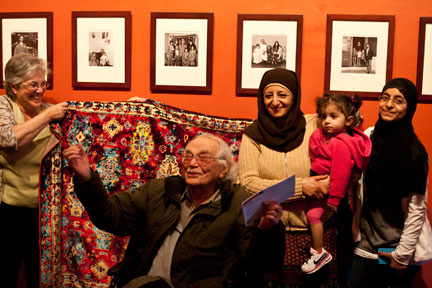

List of Exhibitions and Awards
[Solo Exhibits] [Group Exhibits] [Permanent Collections] [Films] [Publicity/Awards]
Solo Exhibits
2011
- Gage Gallery, Roosevelt University, The Working-Class Eye of Milton Rogovin, Chicago, IL
2010
- El Museo Francisco Oller y Diego Rivera, A Yemeni Community: 1970's photos by Milton Rogovin, Buffalo, New York.
- Museum of Fine Art Houston. "Rogovin 101," in conjunction with FotoFest 2010, Houston Texas.
- Henry Art Gallery, University of Washington, "Happy Birthday, Milton Rogovin," Seattle, Washington.
- Seneca-Iroquois National Museum. "From the Western Door to the Lower West Side," Photographs by Milton Rogovin, Poetry by Eric Gansworth. Salamanca, NY

Milton and guests at the Opening Reception, April 23, 2010. Photo © Gene Witkowski
2009
- Burchfield Penney Art Center. "From the Western Door to the Lower West Side," Photographs by Milton Rogovin, Poetry by Eric Gansworth. Buffalo, New York.
- Gallery Luisotti. "Milton Rogovin: Buffalo," Santa Monica, California.
- Danziger Projects. "Milton Rogovin: in Celebration of his 100th Birthday," New York, New York.
- ARTRage Gallery. "The Picture Man–the Photographs by Milton Rogovin." Syracuse, New York.
2008
- Arab-American National Museum, Dearborn, Michigan. "A Yemeni Community, Photographs by Milton Rogovin"
2007
- Buffalo and Erie County Historical Society. "Milton Rogovin: Native American series, 1963-2002," Buffalo, New York.
- Castellani Art Museum. "Milton Rogovin: Native American series, 1963-2002," Niagara Falls, New York.
2006
- Center for Creative Photography at University of Arizona-Tucson. "Milton Rogovin: Photographer," Tucson, Arizona.
2004
- J. Paul Getty Museum. "Recent Acquisitions: Eugène Atget, Brett Weston, William Garnett, Milton Rogovin," Los Angeles, California. February 3-May 30th, 2004
- Rochester Contemporary. "Remembering the Forgotten Ones," Rochester, New York.
2003
- The New-York Historical Society. "Remembering the Forgotten Ones," New York City. New York.
- Burchfield-Penney Art Center. "Remembering the Forgotten Ones: Selections from the Milton Rogovin Collection," Buffalo, New York.
- WNED Television Station. "Remembering the Forgotten Ones: Selections from the Milton Rogovin Collection," Buffalo, New York.
2002
- Buffalo City Hall. "Celebration of Mothers, Fathers, and Children," Buffalo, New York
- Gallery Luisotti. "Milton Rogovin, Vintage Works," Santa Monica, California
- Stephen Bulger Gallery. "Milton Rogovin, a Retrospective," Toronto, Canada.
2001
- Milwaukee Museum of Art. "From Generation to Generation, Milton Rogovin Photographs," Milwaukee, Wisconsin. Digital reproductions traveled with curriculum through the Milwaukee Public Schools. Also included a poster.
2000
- "Milton Rogovin: A Retrospective" takes place at The Bulger Gallery, Ontario, Canada.
1999
- Stauffacher Center for the Fine Arts, State Fair Community College, Sedalia, Missouri
1998
- Burchfield-Penney Art Center. Buffalo, New York
- Buffalo and Erie County Historical Society. Buffalo, New York
- Foto Forum Nord. Worpswede, Germany
- Kleinhans Music Hall. Buffalo, New York
1997
- Fine Arts Gallery, Indiana University, Bloomington, Indiana
1996
- New York State Museum, Albany, New York
- Cedar Rapids Museum of Art, Iowa
1995
- Lowell Historical Park, Lowell, Massachusetts
- McDonough Museum of Art, Youngston, Ohio
- International Labor Organization, Geneva, Switzerland
1994
- Adirondack Community College, Glens Falls, New York
- Mexican Fine Ars Museum, Chicago, Illinois
- Rochester Institute of Techology, Rochester, New York
- Labor Museum and Learning Center, Flint, Michigan
- Wells College, Aurora, New York
1993
- Art Institute of Chicago. Chicago, Illinois
- Burchfield Art Center. Buffalo, New York
- David Anderson Gallery. Buffalo, New York
1992
- National Museum of American History, Smithsonian Institution. Washington, DC.
- Baltimore Museum of Industry. Baltimore, Maryland
1991
- Preus Foto Museum. Horten, Norway
1988
- The Cleveland Museum of Art. Cleveland, Ohio
1986
- The Peace Museum. Chicago,Illinois
1985
- Albright-Knox Art Gallery. Buffalo, New York
- The Brooklyn Museum. Brooklyn, New York
- Still Gallery. Edinburgh, Scotland
1984
- Aspen Art Museum. Aspen, Colorado
- Capen Gallery, State University of New York at Buffalo. Buffalo, New York
1982-83
- Currier Gallery of Art. Manchester, New Hampshire
- Circulated to: Museum of Art, The Pennsylvania State University. University Park, Pennsylvania
- Charles Burchfield Center, State University College of New York at Buffalo. Buffalo, New York. 1983
- Braithwaite Fine Arts Gallery, Southern Utah State College. Cedar. City, Utah. 1983
1982
- Burchfield Center. Buffalo, New York
- Preus Fotomuseum. Horton, Norway
- Canon Photo Gallery. Amsterdam, Holland
- Centre Internacional de Fotografia. Barcelona, Spain
1979
- State University of New York at Buffalo. Buffalo, New York
1978
- Fotografi Centrum. Stockholm, Sweden
- Panselinos Gallery. Salonika, Greece. Circulated in Greece
1977
- Third International Photographic Event. Pori, Finland
- The Photographic Museum of Finland. Helsinki, Finland
1976-77
- Nina Freudenheim Gallery. Buffalo, New York. Circulated to Griffiths Art Center
- St. Lawrence University. Canton, New York. 1977
- Gallery 1199. New York City, New York. 1977
1976
- International Center of Photography. New York City, New York
1975
- Albright-Knox Art Gallery. Buffalo, New York
1970
- International Museum of Photography at George Eastman House. Rochester, New York
- Center Lounge Gallery, State University of New York at Buffalo. Buffalo, New York
1969
- Frostburg State College. Frostburg, Maryland
1968
- State University of New York at Buffalo. Buffalo, New York
1965
- Penn State University. University Park, Pennsylvania
1964
- Museum of Negro Art and History. Chicago, Illinois; Circulated to: Illinois Institute of Design. Chicago, Illinois
[Solo Exhibits] [Group Exhibits] [Permanent Collections] [Films] [Publicity/Awards]
Group Exhibits
2010
- "Exposing Time: A Photographer Documents a Changing World," Phoenix Art Museum, Phoenix Az.
2009
- From the Western Door to the Lower West Side, an exhibition of photographs by Milton Rogovin and poems by Eric Gansworth, The Burchfield-Penney Art Center, Buffalo, NY
- "The Art of Caring," New Orleans Museum of Art, New Orleans, Louisiana, traveling exhibition and catalog
1999
- Group Exhibit, The Library of Congress
- Month of Photography, Athens, Greece
1998
- "Pass It On: Celebrating Families." Art Institute of Chicago. Chicago, Illinois
- "Main Street - Art Street." Buffalo, New York.
- "Capturing Time, A Celebration of Photography." J. Paul Getty Museum. Santa Monica, California. Also, slide presentation, March, 1998.
1997
- "Democratic Processes." Hartnett Gallery. University of Rochester. Rochester, New York
1991-93
- "Winners of the E. Eugene Smith Award.": Centre Georges Pompidou. Paris, France
- International Center of Photography. New York City, New York
- In these Cities in Japan - Tokyo, Sappora City, Osaka
- Center For Independent Journalism - Prague, Czechoslovakia
- Center For Creative Photography - Tucson, Arizona
1988-89
- "Sojourners and Settlers. The Yemeni Immigrant Experience."
- University of California at Los Angeles. Los Angeles, California
1987
- "China Through Foreigners" Eyes." First International Zhongshan Photographic Art Exhibition. Nationalities Cultural Palace. Beijing, China
- "Mothers and Daughters." Smithsonian Institute. Washington, D.C.
- "The Grand Generation." Smithsonian Institute. Exhibit of Folk Artists. Washington, D.C.
- "Faces." Iroquois Indian Museum. Cobleskill, New York
1986
- "In Spite of Everything YES." Dartmouth College. Dartmouth, New Hampshire
1985
- Buscaglia-Castellani Gallery. Niagara Falls, New York
1981-82
- "One Hundred and Fifty Years of Portraiture in Western New York." Burchfield Center. State University College of New York at Buffalo. Buffalo, New York
1979
- "Ausstellungszentrum am Fernsehturn." Berliner-Internatinal Fotoausstellung. Berlin, German Democratic Republic
1979
- "In Western New York." Albright-Knox Art Gallery. Buffalo, New York
1978
- "Eye of the West: Camera Vision and Cultural Consensus." Hayden Gallery. Massachusetts Institute of Technology. Boston, Masachusetts
1978
- "Thousand and One Photographs." Fotografiska Museet. Stockholm, Sweden
1978
- Photographers" Gallery of London. London, England
1977
- Third International Photographic Event. Pori, Finland
1972
- "Octave of Prayer." Hayden Gallery. Massachusetts Institute of Technology. Cambridge, Massachusetts
1972
- "Images of Concern." Neikrug Gallery. New York City, New York
1970
- "Be-ing Without Clothes." Hayden Gallery. Massachusetts Institute of Technology. Cambridge, Massachusetts
1964
- Buffalo Society of Artists, Annual Exhibition. 69th. Also: 70th, 1965; 71st, 1966; 72nd, 1967; 73rd, 1968; 75th, 1970; 76th, 1971; 77th, 1972; 78th, 1973. Albright-Knox Art Gallery. Buffalo, New York
1954
- Albright-Knox Art Gallery, 20th Annual Western New York Exhibition. Also Western New York Exhibition: 1958, 1960, 1964, 1966, 1967, 1971, 1974, 1975, 1978
[Solo Exhibits] [Group Exhibits] [Permanent Collections] [Films] [Publicity/Awards]
Permanent Collections
- Albright-Knox Art Gallery, Buffalo, New York
- Bibliotheque Nationale, Paris, France
- Burchfield-Penney Art Center, Buffalo, New York
- Cleveland Museum of Art, Cleveland, Ohio
- Columbus Community Health Center, Buffalo, New York
- Columbus Hospital Clinic, Buffalo, New York
- Currier Gallery of Art, Manchester, New Hampshire
- Fotografische Sammlung - Museum Folkwang, Essen, Germany
- Fotografiska Museet, Stockholm, Sweden
- George Eastman House, Rochester, New York
- International Center of Photography, New York City, New York
- J. Paul Getty Museum, Santa Monica, California
- Library of Congress, Washington, DC
- Metropolitan Museum of Art, New York City, New York
- Milwaukee Art Museum, Milwaukee, Wisconsin
- Museum of Fine Arts, Houston, Texas
- Museum of Modern Art, New York City, New York
- National Galleries of Scotland, Edinburgh
- New York Historical Society, New York City, New York
- Niagara Frontier Transit Authority, Buffalo, New York
- Penn State University, University Park, Pennsylvania
- Philadelphia Museum of Art, Philadelphia, Pennsylvania
- Photographic Investments, Ltd., Kansas City, Kansas
- Preus Fotomuseum, Horten, Norway
- Rhode Island School of Design Gallery, Providence, Rhode Island
- Ruhrlandmuseum de Stadt Essen, Essen, Germany
- San Francisco Museum of Modern Art, San Francisco, California
- Schomburg Center For Research in Black Culture, New York City Public Library, New York
- St. Lawrence University Art Gallery, Canton, New York
- University of Buffalo Music Library, Buffalo, New York
- Victoria and Albert Museum, London, England
[Solo Exhibits] [Group Exhibits] [Permanent Collections] [Films] [Publicity/Awards]
Film Festivals & Screenings
2008
The Rich Have Their Own Photographers, 2007, 60 min. B&W and Color- San Fransisco International Documentary Festival, Roxie Cinema, San Francisco, CA
- University of Louisville, panel discussion with filmmaker Ezra Bookstein, historian Cate Fosl, and Mark Rogovin
- CONTACT, Toronto Photography Festival, Toronto, Canada
- London International Documentary Festival, British Museum, London, England
- The Salem Film Festival, Salem, OR
2007
The Rich Have Their Own Photographers, 2007, 60 min. B&W and Color- The Artivist Film Festival at the Egyptian Theatre, Hollywood CA
- New York Premiere at the Paley Center (formerly the Museum of TV & Radio), New York, NY
- Cork International Film Festival, Cork, Ireland
[Solo Exhibits] [Group Exhibits] [Permanent Collections] [Films] [Publicity/Awards]
Selected Publicity & Awards
2010
- The Center for Study of Working Class Life honored Milton Rogovin with its Award for Lifetime Contributions to Social Justice for Working People.
2009
- "Showcase: Milton Rogovin," by Randy Kennedy. NY Times Lens Blog, published August 7, 2009
- "Voices Silenced, Faces Preserved," by Randy Kennedy. NY Times, Arts and Leisure, published August 5, 2009
2008
- Photography and the Work of Class and Race, by Janet Zandy; American Quarterly, Volume 60, Number 1, March 2008
2007
- Recipient of the Cornell Capa Award, presented by the International Center of Photography in New York. The Capa award is considered to be the highest award a photographer in the U.S. can receive, and was awarded Rogovin for his "significant and lasting contributions to photography."
2004
- "Clear Vision: Milton Rogovin Show The Forgotten Ones," Journal article by Joanna Heatwole; Afterimage, Vol. 31, 2004
- "Milton Rogovin: an activist photographer," an interview by Robert Hirsch; Afterimage, September 1, 2004
2003
- "A Sympathetic Lens on Ordinary People; In a New Exhibition Milton Rogovin Evokes the World of Buffalo's Dispossessed," by Juli Salamon, NY Times, Arts, published Monday, June 16, 2003